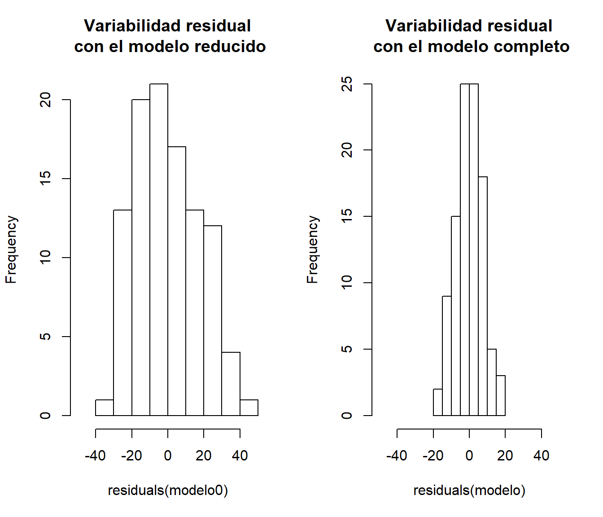
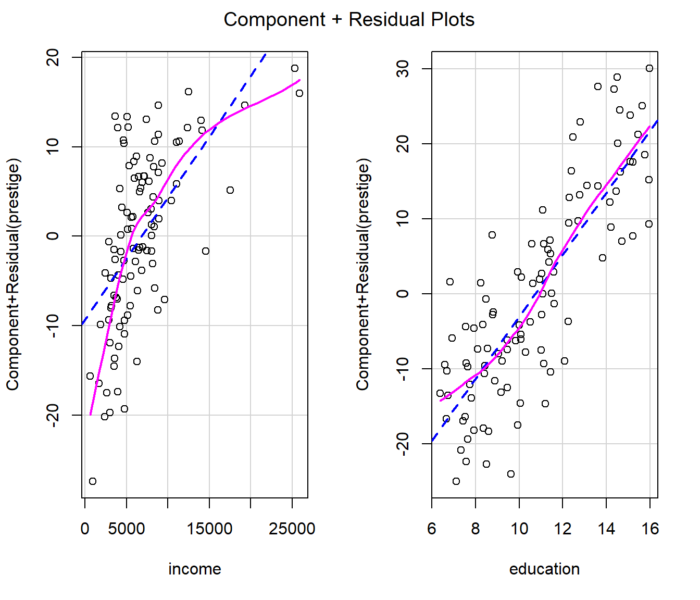

C.5 Contrastes bootstrap semiparamétricos
Este tipo de aproximación se emplearía en el caso de que la hipótesis nula (o la alternativa) especifique un modelo semiparamétrico, con una componente paramétrica y otra no paramétrica. Típicamente se incluye el error en la componente no paramétrica, y podríamos emplear el bootstrap residual (también denominado semiparamétrico o basado en modelos) descrito en la práctica anterior (Apéndice B).
En esta sección consideraremos como ejemplo el conjunto de datos Prestige
del paquete car, considerando como variable respuesta prestige
(puntuación de ocupaciones obtenidas a partir de una encuesta)
y como variables explicativas: income (media de ingresos en la ocupación)
y education (media de los años de educación).
C.5.1 Ejemplo: Inferencia sobre modelos de regresión
En la mayoría de los casos nos interesa contrastar un modelo reducido frente a un modelo completo (que generaliza el modelo reducido). Por ejemplo, en el caso de modelos lineales (estimados por mínimos cuadrados) se dispone del test \(F\) para realizar los contrastes de este tipo, que emplea el estadístico: \[F=\frac{n - q}{q - q_0}\frac{RSS_0 - RSS}{RSS},\] siendo \(n\) el número de observaciones, \(RSS\) y \(q\) la suma de cuadrados residual y el número de parámetros distintos del modelo completo, y \(RSS_0\) y \(q_0\) los correspondientes al modelo reducido. Este estadístico sigue una distribución \(\mathcal{F}_{q - q_0, n - q}\) bajo \(H_0\) y las hipótesis habituales del modelo lineal (\(\varepsilon_i\) i.i.d. \(\mathcal{N}(0, \sigma^2)\)).
El contraste de regresión sería un caso particular. Por ejemplo,
para contrastar si income y education influyen linealmente en prestige
podemos emplear el siguiente código:
##
## Call:
## lm(formula = prestige ~ income + education, data = Prestige)
##
## Residuals:
## Min 1Q Median 3Q Max
## -19.4040 -5.3308 0.0154 4.9803 17.6889
##
## Coefficients:
## Estimate Std. Error t value Pr(>|t|)
## (Intercept) -6.8477787 3.2189771 -2.127 0.0359 *
## income 0.0013612 0.0002242 6.071 2.36e-08 ***
## education 4.1374444 0.3489120 11.858 < 2e-16 ***
## ---
## Signif. codes: 0 '***' 0.001 '**' 0.01 '*' 0.05 '.' 0.1 ' ' 1
##
## Residual standard error: 7.81 on 99 degrees of freedom
## Multiple R-squared: 0.798, Adjusted R-squared: 0.7939
## F-statistic: 195.6 on 2 and 99 DF, p-value: < 2.2e-16También podemos obtener el valor observado del estadístico \(F\)
a partir de los resultados del método summary.lm():
res <- summary(modelo)
# names(res)
stat <- res$fstatistic[1]
df <- res$fstatistic[2]
dfr <- res$fstatistic[3]
res$fstatistic## value numdf dendf
## 195.5505 2.0000 99.0000o haciendo los cálculos a mano:
n <- nrow(Prestige)
q <- 3
q0 <- 1
rss0 <- with(Prestige, sum((prestige - mean(prestige))^2))
rss <- sum(residuals(modelo)^2)
inc.mse <- (rss0 - rss)/(q - q0) # Incremento en varibilidad explicada
msr <- rss/(n - q) # Variabilidad residual
inc.mse/msr## [1] 195.5505Desde el punto de vista de comparación de modelos, el modelo reducido bajo la hipótesis nula es:
y podemos realizar el contraste mediante la función anova()
## Analysis of Variance Table
##
## Model 1: prestige ~ 1
## Model 2: prestige ~ income + education
## Res.Df RSS Df Sum of Sq F Pr(>F)
## 1 101 29895.4
## 2 99 6038.9 2 23857 195.55 < 2.2e-16 ***
## ---
## Signif. codes: 0 '***' 0.001 '**' 0.01 '*' 0.05 '.' 0.1 ' ' 1Para aproximar la distribución de este estadístico bajo \(H_0\) podríamos adaptar el bootstrap semiparamétrico7 descrito en la Práctica 1 (Sección B.2):
library(boot)
pres.dat <- Prestige
# pres.dat$fit0 <- mean(Prestige$prestige)
# pres.dat$fit0 <- predict(modelo0)
pres.dat$res0 <- with(Prestige, prestige - mean(prestige))
# pres.dat$res0 <- residuals(modelo0)
mod.stat <- function(data, i) {
data$prestige <- mean(data$prestige) + data$res0[i]
fit <- lm(prestige ~ income + education, data = data)
summary(fit)$fstatistic[1]
}
set.seed(1)
boot.mod <- boot(pres.dat, mod.stat, R = 1000)
boot.mod##
## ORDINARY NONPARAMETRIC BOOTSTRAP
##
##
## Call:
## boot(data = pres.dat, statistic = mod.stat, R = 1000)
##
##
## Bootstrap Statistics :
## original bias std. error
## t1* 195.5505 -194.4866 1.096335hist(boot.mod$t, breaks = "FD", freq = FALSE)
curve(pf(x, df, dfr, lower.tail = FALSE), lty = 2, add = TRUE)
## [1] 0Procediendo de esta forma sin embargo estaríamos sobreestimando la variabilidad del error cuando la hipótesis nula es falsa (la variabilidad no explicada por la tendencia es asumida por el error), lo que disminuirá la potencia del contraste. Para mejorar la potencia, siguiendo la idea propuesta por González-Manteiga y Cao (1993), se pueden remuestrear los residuos del modelo completo. De esta forma reproduciríamos la variabilidad del error de forma consistente tanto bajo la hipótesis alternativa como bajo la nula.
old.par <- par(mfrow=c(1,2))
hist(residuals(modelo0), xlim = c(-50, 50),
main = 'Variabilidad residual\n con el modelo reducido')
hist(residuals(modelo), xlim = c(-50, 50),
main = 'Variabilidad residual\n con el modelo completo')
Adicionalmente, como se mostró en la Práctica 1, se puede emplear la modificación propuesta en Davison y Hinkley (1997, Alg. 6.3, p. 271) y remuestrear los residuos reescalados y centrados.
pres.dat <- Prestige
# pres.dat$fit0 <- mean(Prestige$prestige)
# pres.dat$fit0 <- predict(modelo0)
# pres.dat$res <- residuals(modelo)
pres.dat$sres <- residuals(modelo)/sqrt(1 - hatvalues(modelo))
pres.dat$sres <- pres.dat$sres - mean(pres.dat$sres)
mod.stat <- function(data, i) {
# data$prestige <- mean(data$prestige) + data$res[i]
data$prestige <- mean(data$prestige) + data$sres[i]
fit <- lm(prestige ~ income + education, data = data)
summary(fit)$fstatistic[1]
}
set.seed(1)
boot.mod <- boot(pres.dat, mod.stat, R = 1000)
boot.mod##
## ORDINARY NONPARAMETRIC BOOTSTRAP
##
##
## Call:
## boot(data = pres.dat, statistic = mod.stat, R = 1000)
##
##
## Bootstrap Statistics :
## original bias std. error
## t1* 0.01164396 1.029746 1.029715En la aproximación del \(p\)-valor hay que tener en cuenta que al modificar los residuos
boot.mod$t0 no va a coincidir con el valor observado del estadístico,
almacenado en stat (por tanto habría que ignorar original y bias
en Bootstrap Statistics;
la función Boot() del paquete car corrige este problema).
hist(boot.mod$t, breaks = "FD", freq = FALSE)
curve(pf(x, df, dfr, lower.tail = FALSE), lty = 2, add = TRUE)
## [1] 0En el caso de modelos no lineales (o otros tipos de modelos lineales) puede ser complicado aproximar los grados de libertad para el cáculo del estadístico \(F\), pero si empleamos bootstrap, vamos a obtener los mismos resultados considerando como estadístico: \[\tilde F =\frac{RSS_0 - RSS}{RSS},\] que se puede interpretar también como una medida del incremento en la variabilidad residual al considerar el modelo reducido (ya que únicamente difieren en una constante). En este caso también se suelen emplear los residuos sin reescalar, ya que también puede ser difícil encontrar la transformación adecuada.
C.5.2 Ejercicio (para entregar)
Al estudiar el efecto de las variables explicativas en el modelo anterior, podríamos pensar que no es adecuado asumir un efecto lineal de alguna de las variables explicativas. Por ejemplo, si generamos los gráficos parciales de residuos obtendríamos:

En este caso podría ser razonable considerar un efecto cuadrático
de la variable income8
##
## Call:
## lm(formula = prestige ~ income + I(income^2) + education, data = Prestige)
##
## Residuals:
## Min 1Q Median 3Q Max
## -15.732 -4.900 -0.057 4.598 18.459
##
## Coefficients:
## Estimate Std. Error t value Pr(>|t|)
## (Intercept) -1.135e+01 3.272e+00 -3.470 0.000775 ***
## income 3.294e-03 5.669e-04 5.810 7.79e-08 ***
## I(income^2) -7.967e-08 2.169e-08 -3.673 0.000390 ***
## education 3.809e+00 3.407e-01 11.179 < 2e-16 ***
## ---
## Signif. codes: 0 '***' 0.001 '**' 0.01 '*' 0.05 '.' 0.1 ' ' 1
##
## Residual standard error: 7.36 on 98 degrees of freedom
## Multiple R-squared: 0.8224, Adjusted R-squared: 0.817
## F-statistic: 151.3 on 3 and 98 DF, p-value: < 2.2e-16Para comparar el ajuste de este modelo respecto al del anterior, podemos
realizar un contraste empleando la función anova():
## Analysis of Variance Table
##
## Model 1: prestige ~ income + education
## Model 2: prestige ~ income + I(income^2) + education
## Res.Df RSS Df Sum of Sq F Pr(>F)
## 1 99 6038.9
## 2 98 5308.0 1 730.8 13.492 0.0003904 ***
## ---
## Signif. codes: 0 '***' 0.001 '**' 0.01 '*' 0.05 '.' 0.1 ' ' 1Contrastar si el efecto de income es lineal mediante bootstrap residual,
empleando como estadístico el incremento en la variabilidad residual con el
modelo reducido y remuestreando los residuos del modelo completo (sin reescalar).
Aproximar el nivel crítico del contraste y el valor que tendría que superar el
estadístico para rechazar \(H_0\) con un nivel de significación \(\alpha = 0.05\).